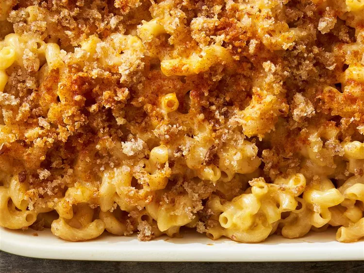

Healthier Homemade Mac and Cheese

To make this rich mac and cheese recipe healthier we use whole wheat bread crumbs, low-fat milk and cheese, whole wheat noodles, and reduced the amount of butter. Serve with a salad for a healthy meatless dinner.
Ingredients
- (16 ounce) package whole wheat macaroni (such as Smart Taste®)
- 2 tablespoons butter
- 2 ½ tablespoons all-purpose flour
- 2 cups shredded low-fat Cheddar cheese
- Preheat oven to 350 degrees F (175 degrees C). Bring a large pot of lightly salted water to a boil. Cook elbow macaroni in boiling water, stirring occasionally until cooked through but firm to the bite, 8 minutes. Drain.
- Melt 2 tablespoons butter in a saucepan over medium heat. Stir in flour to make a roux. Slowly add milk to roux, stirring constantly. Stir in Cheddar and Parmesan cheeses and cook over low heat until cheese is melted and sauce is thick, about 3 minutes. Place macaroni in large baking dish and pour sauce over macaroni. Stir well.